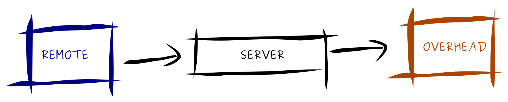
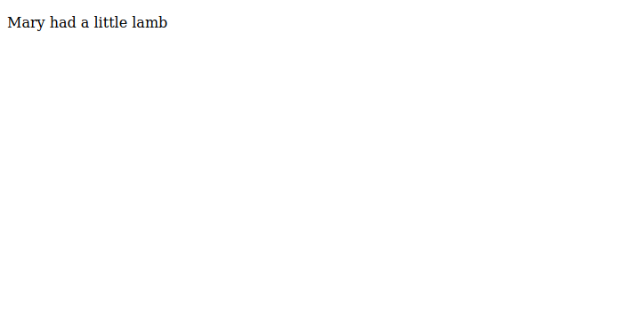
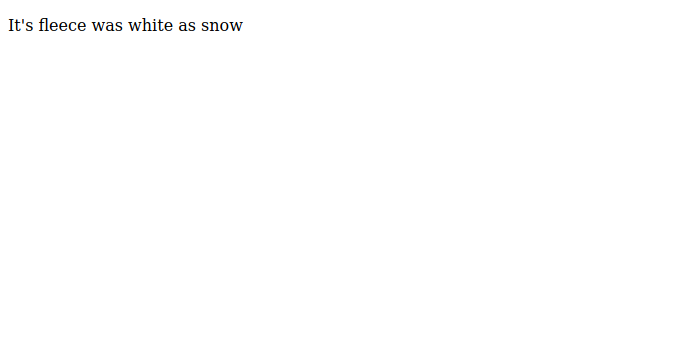

Church Song Lyrics
Before I delve into a code, let me explain a bit about the example problem.
I used to run the overhead at my church. For those not familar with church, during worship service it's common for the current song to be displayed on a large display screen for people to join the worship team, kind of like this:
/Praise-and-Worship-58b5c8ba5f9b586046caf1fa.jpg)
Most churches use PowerPoint for this. If a church is technically-adept enough, they'll often use a special church presentation software. OpenLP is one awesome open source application I've used, but there are some really great commercial versions as well.
But most of these involve a person having to sit in a central location to control the screen.
I thought one day, what if the person running the lyrics can sit anywhere. Maybe they're ill with the flu and they need to stay home but they're the only one who can run it. Or they want to sit with their family.
So, can we design a system that listens for commands (perhaps given by a REST request) then hands that command off to an application to display?
So, very briefly, it would look like this:

On a Web Page
Another "requirement" -- let's use the browser as the application container. Can this work? What's needed for a church presentation?
- Full screen (nobody wants to see the URL bar during worship).
- Respond immediately to navigation (e.g. next slide when user presses the arrow key).
- Styling (although, it's common now to use standard white-on-black)
Obviously, #3 is covered on day 1 for any web development course. What about #1? Is it possible to get full screen in the web browser?
If you've ever used Netflix or YouTube, you know the answer is yes. But what part in the stack controls this?
A quick search of the Mozilla Web API reveals that it's part of the JavaScript API. Not only that, but most of the functions are supported by most major browsers.
While implementing full-screen would be a fun exercise, though, I want to focus on #2 - navigation.
The Example Song
For our demonstration we'll use the lyrics from an old-time classic Mary Had a Little Lamb:
Mary had a little lamb.
It's fleece was white a snow
And everywhere that Mary whent
The lamb was sure to go
Typically for worship presentatations there are multiple lines per slide, but for the sake of simplicity we'll use one line per slide.
LYRICS = [
"Mary had a little lamb",
"It's fleece was white as snow",
"And everywhere that Mary went",
"The lamb was sure to go",
];
We'll also assign the following commands for the following actions:
"f" => Go to first slide.
<arrow_down> => Go to next slide.
<arrow_up> => Go to previous slide.
Since we're having to listen to actions, let's put the lyrics in a class to have easy control over them.
let PLEASE_STOP_HERE = true;
type Show = any | null;
class PresentationController {
public LYRICS = [
"Mary had a little lamb",
"It's fleece was white as snow",
"And everywhere that mary went",
"The lamb was sure to go",
];
public constructor(public show: Show) {}
private i = 0;
public current() {
let lyr = this.LYRICS[this.i];
return new Slide(this.show, lyr);
}
public next() {
if (this.i < this.LYRICS.length - 1) this.i += 1;
return this.current();
}
public previous() {
if (this.i > 0) this.i -= 1;
return this.current();
}
public first() {
this.i = 0;
return this.current();
}
}
The show argument we'll fill in later.
Using WebSockets
WebSockets allow a client script to wait and receive commands from a server. You can think of it as like a server all its own, but running in the client space.
More documenation is available here.
Front-End (FE), Server (S), and Client (C)
Front-end
For our application, the JavaScript code for the web pages will open a connection with the server and wait for commands form a remote client.
Server
The server will need a request framework to listen for connections. The server framework can be whatever you want it to be but for our purposes we'll be using Node.js, so the Express library will be used.
Client
We'll worry about this last, since REST will be used for the transport layer. We can send the command over curl if needed, as long as it agrees with the Server's schema.
Design of the Sever.
We need to think of this in reverse. We essentially don't care what the FE is sending us (yes, in a production application we need to worry about logging in, errors, and more--remember, start simple). We're only concerned with what the C is sending us, and then we'll send that to the FE.
How Not to Design It
During the first itereration, I thought, all right, simple enough...create an express application to listen both for WebSockets and HTTP requests...
// Pseudocode....
const ws WebSocket = new WebSocket();
app.get("/:action", function (
req: Request,
res: Response,
next: NextFunction
) {
let lyrics = getNext(request.params['action']);
ws.send(lyrics)
}
Unfortunately, this does not work as expected. Why?
Simple. We're just listening for HTTP requests and not WebSocket connections. So the connection will never be open.
Which means we need 2 apps running.
2 Applications
The first app (recv) will listen for commands from the C. The second app (app) will
determine what lyrics to display based on the key press.
What About Communication?
You might notice that there's no way recv can communicate with app. Here's a
diagram for what's going on
(remote client)
|
|
V
[recv] [app]
|
|
V
(front-end)
We need something to connect the two services.
(remote client)
|
|
V
[recv] <- (?) -> [app]
|
|
V
(front-end)
Enter Redis!
Redis is an in-memory database and is used frequently for inter-process communication.
The psuedocode will look like this:
(these are performed asynchronously)
recv:
1. wait for a command from the client
2. put the command on the queue
app:
1. wait for a command from the queue
2. get the command from the queue
3. remove the command from the queue
4. get the lyrics based on the command
5. send the lyrics to the websocket.
There's no need to create your own queue framework, either. Libraries exist that include this functionality. For this project, RedisSMQ (Simple Message Queue) is used.
While in a production environment it's best to hook this into the app startup, we'll simply add it directly into the script:
const rsmq = new RedisSMQ({ host: "127.0.0.1", port: 6379, ns: "rsmq" });
app: Send Commands To the WebSocket
This is pretty straightforward from a coding standpoint save for one caveat:
async function tick(ws : any, request: Request, next: NextFunction) {
let msg = await rsmq.popMessageAsync({ qname: "lyrics" }) as {id: number, message; string};
// ** The caveat
usleep(10);
// Don't error out if we don't have a code yet.
if (!msg.id) return next();
// debugging :)
console.log(msg);
// Send lyrics to the client
// lyr is the LyricsController instance.
// lyr[msg.message] is actually a function, so we're getting
// the pure function name from the message.
// Obviously for production you'd want to do error checking,
// but we're feeling lazy today. :)
await ws.send(JSON.stringify(lyrmsg.message));
next();
}
// A general listen function.
async function listen(ws: any, request: Request, next: NextFunction) {
while (1) {
await tick(ws, request, next);
}
}
// This is what the FE code will connect to
// e.g. http://localhost:3000/lyrics
app.ws("/lyrics", async function (
ws: any,
request: Request,
next: NextFunction
) {
listen(ws, request, next);
});
Now for the caveat. We need to add a time to sleep in order for recv to wait
for the queue to clear. Otherwise, if next is the command given, recv will keep
getting next, next, next, ... until the command is popped.
Ideally a mutex would be used to prevent this from happening, but for now we'll use a timer and sleep for 10 microseconds (I found this value worked after some experimenting).
Waiting for Commands from the Client
We still need to add paths for express to listent to the client. This is
even simpler than for app:
recv.get("/:action", function (
req: Request,
res: Response,
next: NextFunction
) {
let action = req.params["action"];
rsmq.sendMessage({ qname: "lyrics", message: action }, function (
err: any,
resp: any
) {
if (err) res.status(500).json({ error: err });
else res.status(200).send(The command was </span><span class="si">${</span><span class="nx">action</span><span class="si">}</span><span class="err">\</span><span class="sb">n);
next();
});
});
Waiting on the FE
I'll just show you the code for the page. It's pretty straightforward:
<!DOCTYPE html>
<html lang="en">
<head>
<meta charset="utf-8" />
<title>Worship Presentation Example</title>
<meta name="description" content="The Church Application" />
<meta name="author" content="SitePoint" />
<style id="slideshow-styling"></style>
<link rel="stylesheet" href="css/styles.css?v=1.0" />
</head>
<body>
<div id="main">
<p id="lyrics"></p>
</div>
<script type="text/javascript">
const url = "ws://127.0.0.1:3000/lyrics";
let aWebSocket = new WebSocket(url);
function reconnect() {
aWebSocket = new WebSocket(url);
console.log(aWebSocket);
}
console.log(aWebSocket);
aWebSocket.addEventListener("message", ($ev) => {
let lyrics = $ev.data;
console.log(lyrics);
let target = document.getElementById("lyrics");
let data = JSON.parse(lyrics);
console.log(data.lyrics)
// This displays the lyrics. Anything previously rendered
// will be removed.
document.getElementById("lyrics").innerText = data.lyrics;
// We'll apply any styling here.
if (data.show && data.show.css)
document.getElementById("slideshow-styling").innerText = data.show.css;
});
aWebSocket.addEventListener("close", ($ev) => {
console.debug("Reconnecting...");
reconnect();
})
</script>
</body>
</html>
A Few Notes
The one thing extraneous I did was add styling to commands. But that's optional.
Another note is that if the server is reloaded (e.g. due to a change) the WebSocket connection will be lost. Just reload the webpage.
Controlling The Presentation.
The awesome thing is that this can be done using CURL (or Insomina, or any other
REST client)
For example the following URL will display the first slide on the client:
curl http://127.0.0.1:3001/first

Consequently, we'll go to the next slide with the following command:
curl http://127.0.0.1:3001/next

How awesome is that! The webpage obeys our command without us touching it!
Conclusion
WebSockets allow the programmer to send data from a server to a client. In this example, we got to see how it can be used for a remote worship service.
The server had 2 Express applications running, connected by Redis Simple Message Queue. When a command came in, it was put on the queue for the WSGI app, then popped off the queue for the WebScoket ASGI app.
At this point the web page listening (or any client listening) to the WebSocket was able to receive a message from the server. JavaScript on the client web page then handled the display of the lyrics for the current slide.
Full Server Code
For those interested, here is the full server source code:
// import express, { Request } from "express";
import { Application, WithWebsocketMethod } from "express-ws";
import { NextFunction } from "connect";
const express = require("express");
import { Request } from "express-serve-static-core";
import { Response, json } from "express";
import { createClient } from "redis";
import { usleep } from "usleep";
// const RedisSMQ = require("rsmq");
import RedisSMQ from "rsmq";
const WebSocket = require("ws");
let app = (express() as unknown) as Application;
let recv = (express() as unknown) as Application;
var expressWs = require("express-ws")(app);
const r = createClient();
enum TransitionType {
FADE = "fade",
}
class Transition {
public constructor(transitionType : TransitionType, duration : number){}
}
class Show {
constructor(public css : string, public transition : Transition | null) {}
}
class Slide {
constructor(public show : Show, public lyrics : string) {}
}
class PresentationController {
public LYRICS = [
"Mary had a little lamb",
"It's fleece was white as snow",
"And everywhere that mary went",
"The lamb was sure to go",
];
public constructor(public show: Show) {}
private i = 0;
public current() {
let lyr = this.LYRICS[this.i];
return new Slide(this.show, lyr);
}
public next() {
if (this.i < this.LYRICS.length - 1) this.i += 1;
return this.current();
}
public previous() {
if (this.i > 0) this.i -= 1;
return this.current();
}
public first() {
this.i = 0;
return this.current();
}
}
const rsmq = new RedisSMQ({ host: "127.0.0.1", port: 6379, ns: "rsmq" });
let lyr = new PresentationController(new Show("#main{background-color:'green'; color: white;} p {color: white;}", null));
rsmq.createQueue({ qname: "lyrics" }, function (err: any, response: any) {
if (err) {
console.error(err);
}
});
recv.get("/:action", function (
req: Request,
res: Response,
next: NextFunction
) {
let action = req.params["action"];
rsmq.sendMessage({ qname: "lyrics", message: action }, function (
err: any,
resp: any
) {
if (err) res.status(500).json({ error: err });
else res.status(200).send(The command was </span><span class="si">${</span><span class="nx">action</span><span class="si">}</span><span class="err">\</span><span class="sb">n);
next();
});
});
async function tick(ws : any, request: Request, next: NextFunction) {
let msg = await rsmq.popMessageAsync({ qname: "lyrics" }) as {id: number, message; string};
usleep(10);
if (!msg.id) return next();
console.log(msg);
// SEND LYRICS TO THE CLIENT
await ws.send(JSON.stringify(lyrmsg.message));
next();
}
async function listen(ws: any, request: Request, next: NextFunction) {
while (1) {
await tick(ws, request, next);
}
}
app.ws("/lyrics", async function (
ws: any,
request: Request,
next: NextFunction
) {
listen(ws, request, next);
});
app.listen(3000);
recv.listen(3001);
console.log("App is listening on localhost:3000");
export default app;